CAD modeliranje · modeliranje limova (engl. sheet metal) · SolidWorks
SolidWorks Sheet Metal: limena oplata korak po korak
Primjer limene oplate iz priručnika SolidWorks, poglavlje 7 Modeliranje limova: isti model čija je razvijena ploha na slikama 7.4, 7.8 i 7.10. Svaka od 15 značajki u stablu prikazana je redom kojim je model građen, s vrijednostima iz PropertyManagera i snimkom iz SolidWorksa 2017. Model u 3D-u je stvarna geometrija nakon svake značajke: tirkizno je ono što značajka dodaje, crveno ono što nestaje. Na kraju su razvijena ploha i izvoz u DXF.
Uz to: SolidWorks Sheet Metal: kutija za sat (razvijeni oblik iz DXF-a i Sketched Bend) · SolidWorks Weldments: zavarena konstrukcija (konstrukcijski članovi, Trim/Extend, lista rezanja) · CAD modeliranje: Sheet Metal
3D: stablo značajki korak po korak
Tirkizno: što trenutna značajka dodaje. Crveno: što nestaje (rez, razvijanje). Plavo: skica. Crveno isprekidano na razvijenoj plohi: crte savijanja.
U SolidWorksu
Druga snimka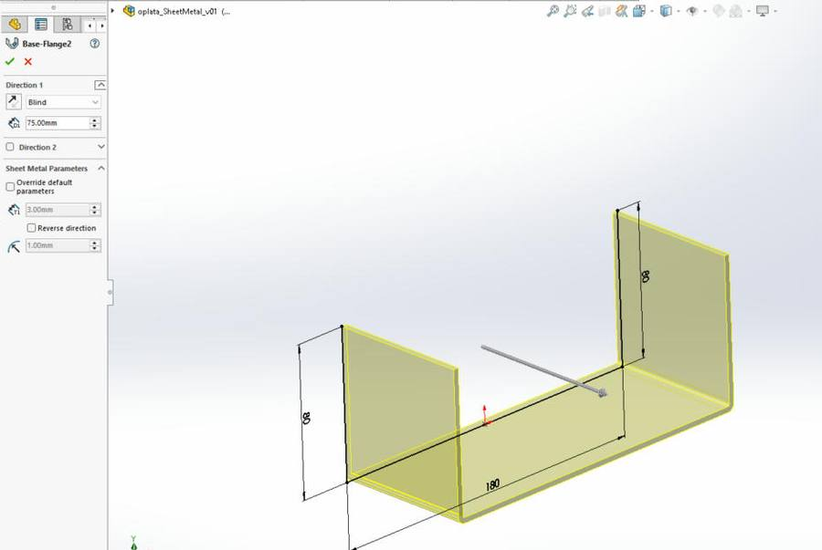
Stablo značajki (FeatureManager)
Nazivi su isti kao u stablu izvornog modela (Base-Flange2, Edge-Flange4 …). SolidWorks broji i značajke koje su tijekom izrade obrisane, pa brojevi nisu uzastopni.
Što priručnik traži, a što to je u SolidWorksu
Popis iz priručnika „Nakon ovog poglavlja moći ćete:” (doslovno), uz naredbu i značajku u ovom modelu:
| Ishod iz priručnika | Naredba u SolidWorksu | U ovom modelu |
|---|---|---|
| izraditi osnovne prirubnice | Base Flange/Tab | Base-Flange2 |
| izraditi kutne prirubnice | Miter Flange | Miter Flange1 |
| zrcaliti part i izraditi značajke savijanja | Mirror, Sketched Bend | Mirror1, Sketched Bend1 |
| dodati rubne prirubnice i urediti profile skice | Edge Flange, Edit Flange Profile | Edge-Flange2, Edge-Flange4 |
| zrcaliti razne značajke u Sheet Metal modulu | Mirror | Mirror2 |
| dodati i saviti razne dijelove modela | Base Flange/Tab (trak), Sketched Bend | Tab1, Sketched Bend1 |
| dodati rez preko zavoja na modelu | Unfold, Extruded Cut, Fold | Unfold1, Cut-Extrude2, Fold1 |
| izraditi preklopne i rasklopne zavoje na modelu | Fold, Unfold | Fold1, Unfold1 |
| izraditi zatvoreni kut na modelu | Corners → Closed Corner | Closed Corner1 |
| izraditi crteže lima | Flatten, Save As → Dxf | Flat-Pattern, DXF |
| izraditi smjernice o liniji savijanja. | Bend lines | crte savijanja u DXF-u |
Pravila modeliranja limova
- priručnikSva savijanja i probijanja lima potrebno je izvesti u načinu rada - modeliranje limova za savijanje ili Sheet Metal. Oba izreza (Cut-Extrude1 i Cut-Extrude2) napravljena su naredbom Extruded Cut s kartice Sheet Metal, s „Link to thickness” ili „Through All” i „Normal cut”. Takav rez ostaje ispravan i u razvijenoj plohi.
- priručnikPrva značajka koju je potrebno dodati ima ulogu baze lima, a iz te značajke započinju sva ostala savijanja. Ovdje je to Base-Flange2 iz otvorenog U-profila. Osnovna prirubnica može nastati iz otvorenog profila (crta) ili iz zatvorenog obrisa (ploča).
- priručnikSva savijanja kod limova se najčešće izvode u određenim zaobljenjima, rijetko kad su oštrog prijelaza i bridova. Polumjer savijanja 1 mm zadan je u značajci Sheet-Metal, a sve prirubnice i savijanja imaju kvačicu „Use default radius”.
- SolidWorksDebljina lima, polumjer savijanja, K-faktor i rasterećenje zadaju se jednom, u značajci Sheet-Metal. Promjena u Sheet-Metal mijenja sve prirubnice i sva savijanja odjednom. Pojedina prirubnica smije imati svoje vrijednosti samo ako se u njoj makne kvačica „Use default radius”.
- provjerenoKod lima se zrcali tijelo (Bodies to Mirror), a ne pojedina značajka lima. Mirror1 zrcali tijelo i ispravan je. Mirror2 zrcali značajku Edge-Flange2: SolidWorks 2017 pri uređivanju javlja „This Sheet Metal feature cannot be mirrored individually. Please try mirroring a body.”
- SolidWorksRez preko zavoja radi se na razvijenom limu: Unfold → Extruded Cut → Fold. Unfold i Fold imaju istu fiksnu plohu (dno) i isto savijanje (Miterbend4). Skica reza crta se dok je zavoj razvijen, pa rez nakon Fold prati zavoj.
- SolidWorksGdje se dvije prirubnice sastaju, mora ostati razmak. Kutna prirubnica ima razmak 0,25 mm (Gap distance), a zatvoreni kut 0,1 mm. Bez razmaka bi se prirubnice u razvijenoj plohi preklopile i lim se ne bi mogao izrezati iz jedne ploče.
- SolidWorksFixed face je ploha koja ostaje na mjestu; savija se dio lima s druge strane crte savijanja. U Sketched Bend1, Unfold1 i Fold1 odabrana je ploha Face<1>. Kod rubne prirubnice „Material Outside” određuje da lim ostaje izvan odabranog ruba, pa vanjska mjera ostaje ista.
- priručnikNije preporučljivo ručno razvijati limove jer značajka automatski kompenzira udaljenosti razvijene dužine. Ponovite i istražite: pojam neutralne osi — kod proračuna razvijene dužine u odnosu na savijenu dužinu, bitan je proračun dužine neutralne osi. K-faktor je pojam koji je isto tako bitan, a predstavlja omjer koji se koristi kod proračuna pozicije neutralne osi. (U ovom modelu K-faktor je 0,5.)
- priručnikKod pripreme razvijene pločevine za obradu potrebno je isporučiti uređen dokument, što znači da takav dokument treba sadržavati isključivo vanjski obris lima, bez pomoćnih linija, simetrala ili linija savijanja. Vodite računa da je generirani dokument u mjerilu 1:1. U prozoru DXF / DWG Output kvačica je samo na „Geometry”. Crte savijanja (Bend lines) izvoze se samo u zasebnu datoteku, za oznaku mjesta savijanja. Obrazovna inačica SolidWorksa u DXF dodaje dva teksta koja se prije rezanja brišu.
priručnik — rečenica iz priručnika SolidWorks, poglavlje 7 Modeliranje limova · SolidWorks — pravilo naredbe u SolidWorksu · provjereno — utvrđeno na ovom modelu u SolidWorksu 2017.
Postupak
- File → New → Part (MMGS). Skica na
Front Plane: otvoreni U-profil 80 + 180 + 80 mm. - Sheet Metal → Base Flange/Tab: Blind 75 mm, T1 = 3 mm, polumjer savijanja 1 mm. U stablu se pojave Sheet-Metal, Base-Flange i Flat-Pattern.
- Sheet-Metal → Edit Feature: provjeri R 1 mm, T 3 mm, K-faktor 0,5, Auto Relief Rectangular 0,5.
- Extruded Cut: kružnica R 20 mm na rubu dna, Link to thickness, Normal cut.
- Reference Geometry → Plane: vodoravna ravnina Plane1 za skicu profila kutne prirubnice.
- Miter Flange: profil na Plane1, tri povezana ruba, Material Outside, Gap 0,25 mm.
- Mirror: Mirror Face = stražnja ploha, Bodies to Mirror = tijelo, Merge solids.
- Edge Flange na gornjem rubu desne stijenke: Edit Flange Profile, 90°, Blind 30 mm, Material Outside, Offset 15 mm.
- Mirror preko
Right Planena lijevu stijenku. - Base Flange/Tab na plohi lijeve prirubnice: pravokutna skica, trak dužine 20 mm.
- Sketched Bend: crta savijanja na traku, Fixed face, 90°, Material Outside.
- Unfold: Fixed face dno, Bends to unfold = Miterbend4.
- Extruded Cut na razvijenom dijelu: Through All, Normal cut — rez preko zavoja.
- Fold: ista fiksna ploha, Miterbend4 natrag u savijeno stanje.
- Edge Flange na prednjem rubu dna: 75°, Blind 85 mm, uređen profil, rasterećenje Rectangle 0,3.
- Corners → Closed Corner: Butt, Gap 0,1 mm, Coplanar faces, Narrow corner.
- Flatten (Flat-Pattern): razvijena ploha 439,7 × 271,1 mm. Zatim File → Save As → Dxf: Sheet metal, samo Geometry, DXF/DWG Cleanup → Save. DXF provjeri u programu za crteže (mjerilo 1 : 1, samo vanjski obris).
Provjera u SolidWorksu 2017
| Razvijena ploha (Flat-Pattern) | 439,71 × 271,12 mm |
|---|---|
| Savijeni model | 247,0 × 106,1 × 185,8 mm |
| Lim | debljina 3 mm, polumjer savijanja 1 mm, K-faktor 0,5 |
| DXF, samo Geometry | 46 crta, 2 luka R 20 mm, 1 polilinija + 2 teksta obrazovne inačice |
| DXF, Geometry + Bend lines | + 16 crta savijanja, tip crte CENTERX2 |
| Datoteka za 3D ispis prototipa | ista razvijena ploha u mjerilu 50 %: 219,85 × 135,56 mm (PrusaSlicer, 0,30 mm DRAFT, 1 h 29 min, 30,65 g) |
| Stablo značajki | 15 značajki + Flat-Pattern, model se pregrađuje bez grešaka |
Drugi put iz priručnika: uvoz 2D geometrije
Kad razvijeni lim već postoji kao nacrt (*.DXF ili *.DWG), u SolidWorksu se otvori kao 2D skica: File → Open, filtar *.dxf / *.dwg, odabir sloja s obrisom, provjera mjerila i mjernih jedinica. Iz te skice nastaje osnovna prirubnica (Base Flange/Tab) ili se nacrt pretvara u lim (Convert to Sheet Metal), a savijanja se dodaju naredbom Sketched Bend. Tim je putem napravljena kartonska kutija za sat.
Snimke iz SolidWorksa 2017


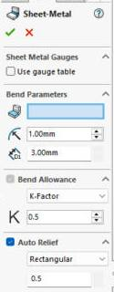

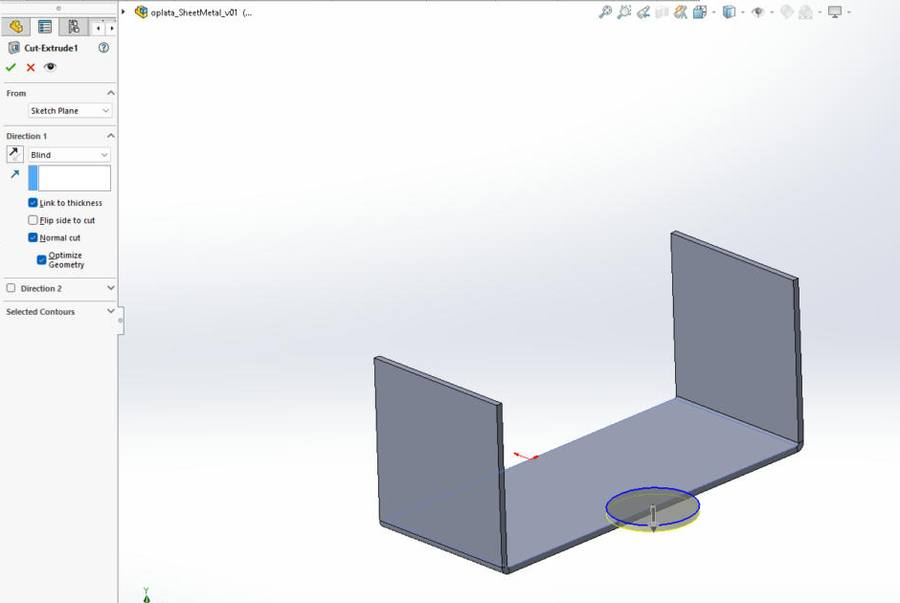

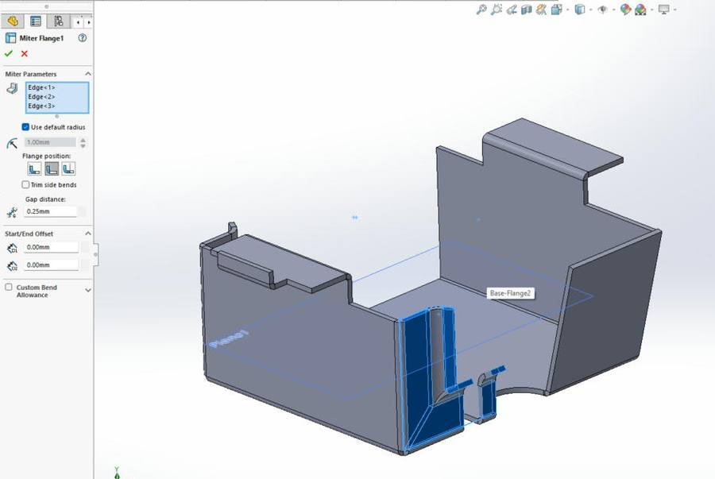

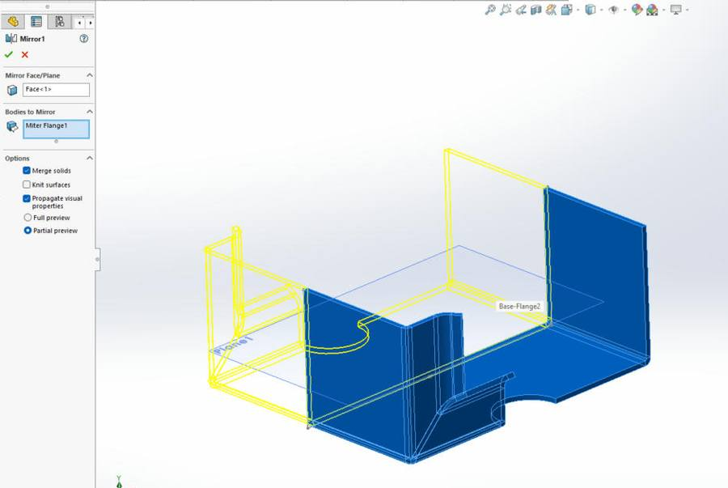

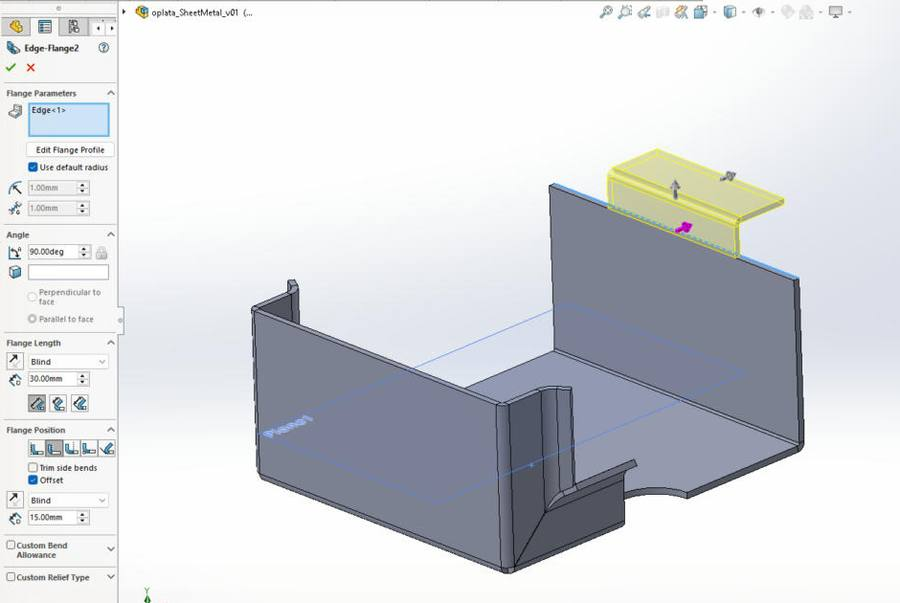

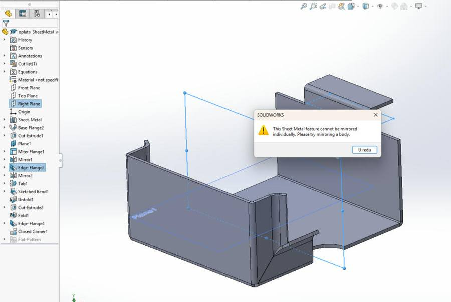

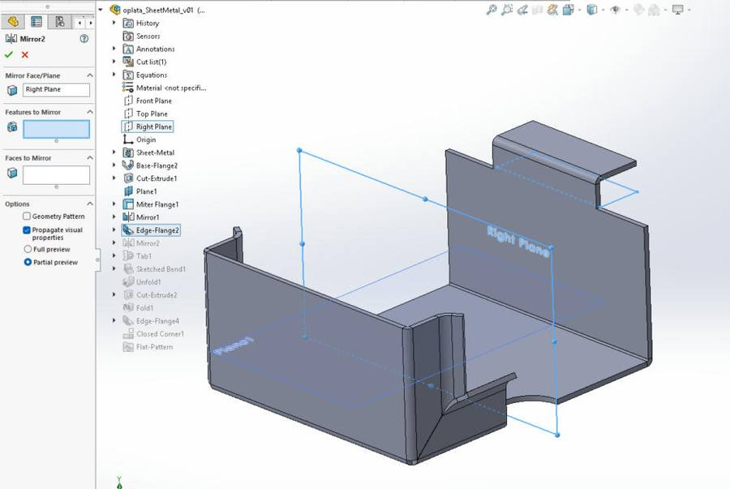

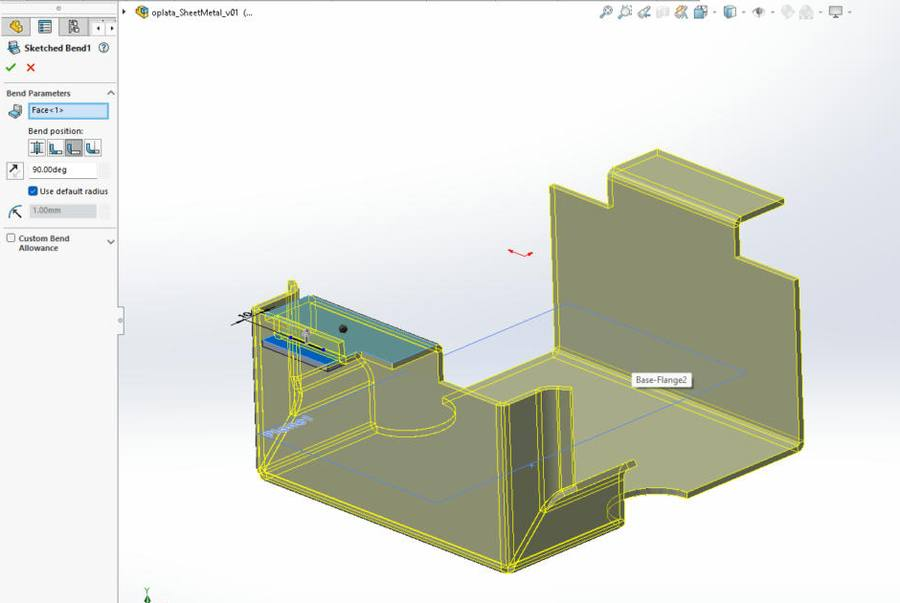

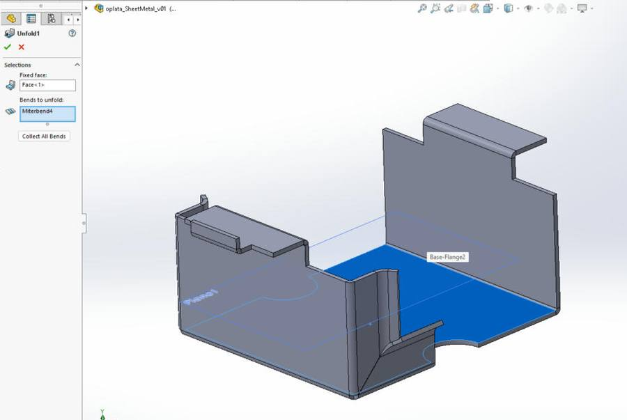

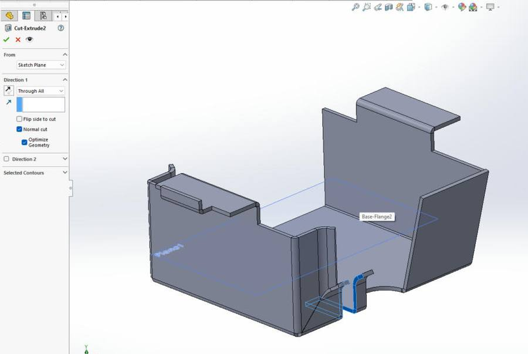

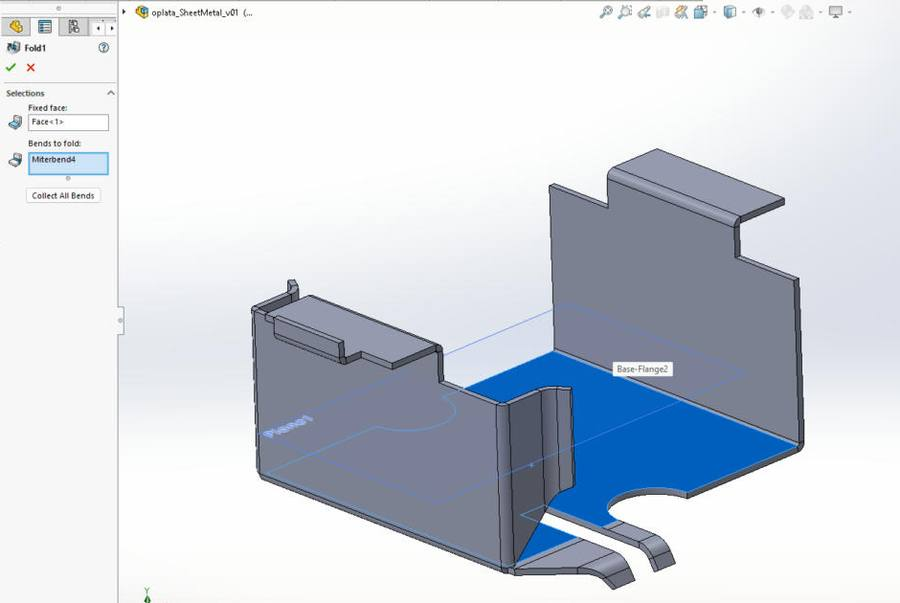

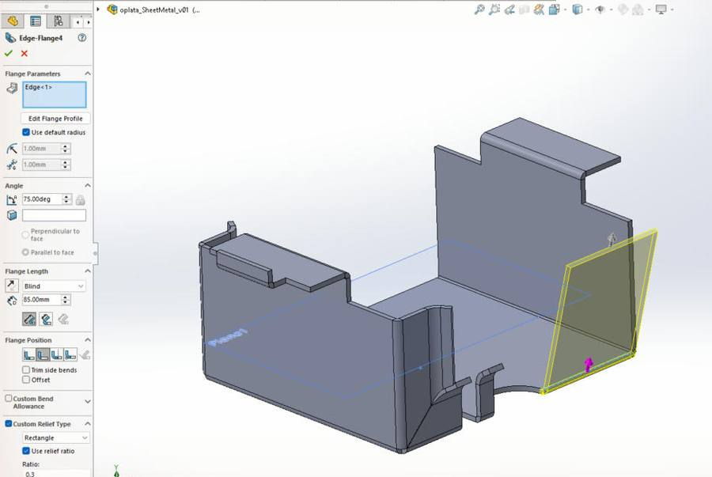

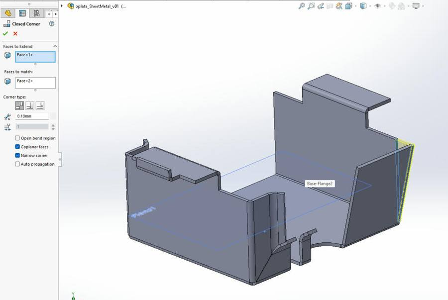

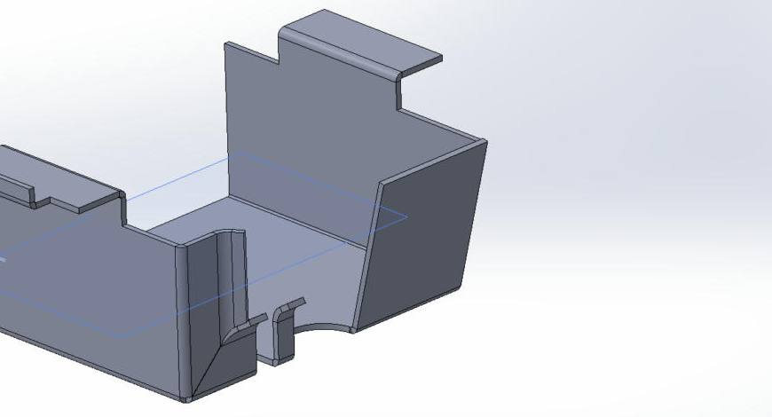

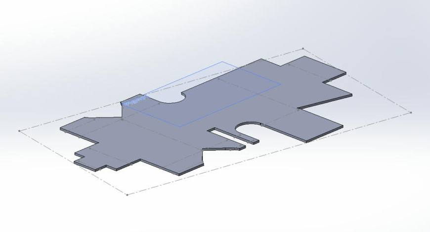

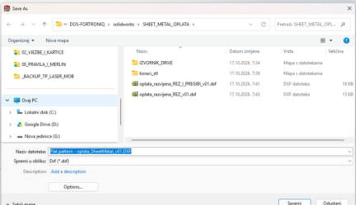

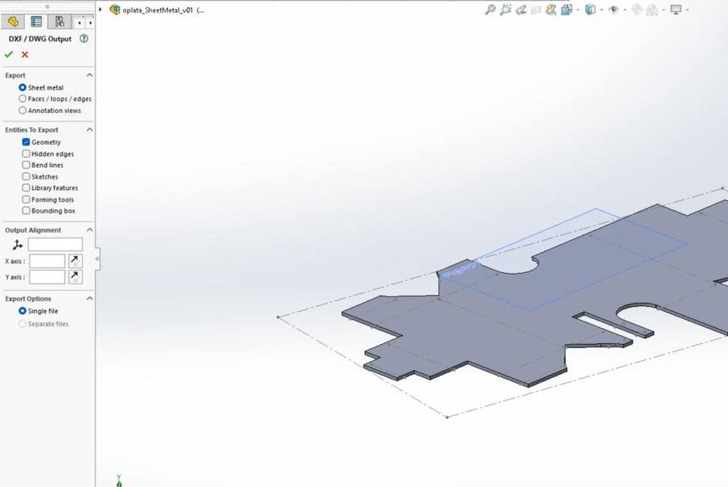

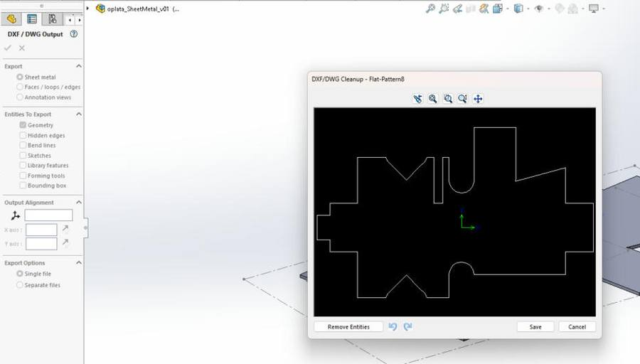

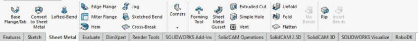